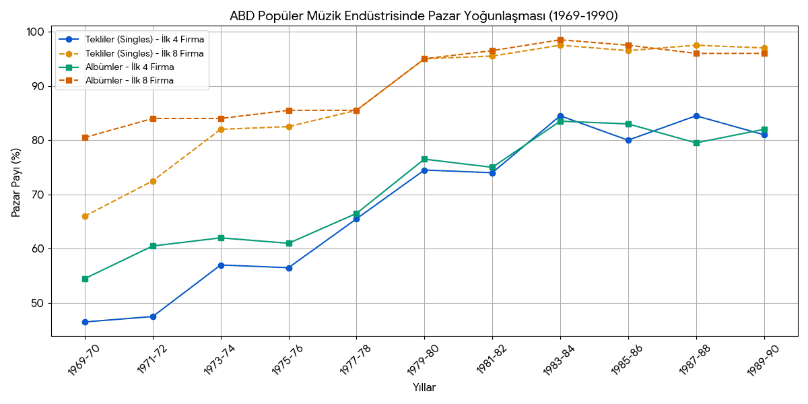

Ahmet Ertegün'ün Atlantic Records Corporation üzerinden kurduğu sosyalizasyon politikası ve şirketin Amerikan müzik Endüstrisinin dönüşümüne etkileri
Yazar: Hamza Mirza Kasap
ÖZ
Amerikan müzik endüstrisi, 20. yüzyılın ortalarında sadece ekonomik bir pazar değil, aynı zamanda ırksal ayrımcılığın ve sınıfsal farklılıkların keskin hatlarla çizildiği sosyolojik bir çatışma alanıydı. Bu karmaşık yapı içerisinde, Türk diplomat bir ailenin oğlu olan Ahmet Ertegün tarafından 1947 yılında kurulan Atlantic Records, yalnızca bir plak şirketi olmanın ötesine geçerek, kültürel bir entegrasyonun ve Amerika'daki sanatsal üretimin merkezi haline gelmiştir. Ertegün'ün çok kültürlü arka planı, Avrupa ve Türkiye'de aldığı nitelikli eğitim ve Washington'daki diplomatik çevresi, ona Amerikan toplumuna dışarıdan ama derinlemesine bakan bir "gözlemci" yetkinliği kazandırmıştır.
Bu çalışmanın temel amacı; bir müzik şirketi yöneticisinin hayatı, kişisel özellikleri ve vizyonunun, kurmuş olduğu şirket üzerinden Amerikan müzik endüstrisini (sanatsal, teknik ve ticari olarak) nasıl dönüştürdüğünü incelemektir. Ertegün'ün başarısı, Ray Charles veya Aretha Franklin gibi isimleri keşfetmekle sınırlı kalmamış; aynı zamanda siyahi müziğin (R&B, Jazz, Soul) ana akım beyaz dinleyici kitlesiyle buluşturulduğu stratejik bir "sosyalizasyon politikası" üzerine inşa edilmiştir. Bu politika, stüdyoyu ırksal bariyerlerin yıkıldığı bir demokrasi alanı olarak konumlandırırken, müziği toplumsal birleştirici bir güç olarak yeniden tanımlamıştır.
Bu makalede, 1940'ların ırk ayrımcılığına dayalı Amerika'sından 1990'ların oligopol piyasasına uzanan süreçte Atlantic Records'un rolü incelenecektir. Ertegün ve ekibinin (Herb Abramson, Jerry Wexler, Arif Mardin) bu sert rekabet ortamında sanatsal özerkliği nasıl koruduğu, İlhan Mimaroğlu ile kurulan entelektüel ortaklık üzerinden çağdaş sanat üretiminin nasıl sürdürüldüğü ve teknolojik dönüşümlere (plaktan CD'ye geçiş) nasıl adapte olunduğu piyasa verileri ışığında analiz edilecektir.
Anahtar Kelimeler: Arif Mardin, İlhan Mimaroğlu, Müzik Endüstrisi, Kültürel Entegrasyon, Oligopolleşme.
Ahmet Ertegun's Socialization Policy Through Atlantic Records Corporation and Its Impact on the Transformation of the American Music Industry
Abstract
In the mid-twentieth century, the American music industry was not merely an economic marketplace but also a sociological site of conflict, sharply defined by racial segregation and class divisions. Within this complex structure, Atlantic Records—founded in 1947 by Ahmet Ertegün, the son of a Turkish diplomat—transcended the role of a conventional record label to become a focal point of cultural integration and artistic modernism. Ertegün's multicultural background, the rigorous education he received in Europe and Turkey, and his exposure to Washington's diplomatic circles endowed him with the perspective of an "observer" who viewed American society from an external yet deeply informed position. The principal aim of this study is to examine how the life, personal attributes, and vision of a music industry executive reshaped the American music industry—artistically, technologically, and commercially—through the company he founded. Ertegün's achievements were not limited to discovering artists such as Ray Charles or Aretha Franklin; they were also grounded in a strategic "socialization policy" that introduced Black music (R&B, jazz, soul) to a mainstream white audience. This policy positioned the recording studio as a democratic space in which racial barriers were dismantled, while redefining music as a force of social cohesion.
This article examines the role of Atlantic Records from the segregation-based America of the 1940s to the oligopolistic market structure of the 1990s. Drawing on market data, it analyzes how Ertegün and his team (Herb Abramson, Jerry Wexler, Arif Mardin) maintained artistic autonomy within an intensely competitive environment, how the patronage of "high art" was sustained through an intellectual partnership with İlhan Mimaroğlu, and how the company adapted to technological transitions, from vinyl records to the compact disc.
Keywords: Arif Mardin, İlhan Mimaroğlu, Music Industry, Cultural Integration, Oligopolization.
1. Giriş
Amerikan müzik endüstrisi tarihi, genellikle popüler yıldızlar ve satış rekorları üzerinden okunsa da bu sektörün arka planında derin toplumsal kırılmalar ve bir endüstriyel dönüşüm yatmaktadır. 1940'lı yılların Amerika'sı, kültürel üretimin "Dört Büyükler" olarak adlandırılan dev şirketlerin tekelinde olduğu ve müzik türlerinin ırksal bariyerlerle (Race Records ve Pop) kesin olarak ayrıştırıldığı bir yapıya sahipti. Bu "kapalı sistem" içerisinde siyahi müzik, gettolarla sınırlı kalmış yerel bir ifade biçimi olarak görülürken, ana akım pazar beyaz dinleyici kitlesi için standardize edilmiş ürünler sunmaktaydı.
Bu katı yapının kırılma noktası, 1947 yılında Ahmet Ertegün ve Herb Abramson tarafından kurulan Atlantic Records ile gerçekleşmiştir. Ancak Atlantic Records'u dönemindeki diğer bağımsız plak şirketlerinden ayıran temel faktör, sadece ticari bir girişim olması değil; kurucusu Ahmet Ertegün'ün yıllar içinde edindiği vizyonudur. Washington'daki Türk Büyükelçiliği'nde sanatçılarla kurduğu ilişkiler ve tecrübesini müzik prodüksiyonuna aktaran Ertegün, stüdyoyu ırk ve sınıf ayrımlarının askıya alındığı bir "sosyalizasyon alanı" olarak yeniden kurgulamıştır. Bu bağlamda Atlantic Records, sadece R&B veya Caz plakları basan bir şirket değil, Amerikan toplumundaki ırksal bariyerlerin en azından sanat camiası özelinde kırılması noktasında önemli bir işlev görmüştür.
Bu çalışmanın amacı, Ahmet Ertegün'ün kişisel vizyonu ile şekillenen bu "sosyalizasyon politikası"nın, Amerikan müzik endüstrisinin yapısal dönüşümüne olan etkilerini incelemektir. Makalede, Atlantic Records'un yerel bir bağımsız şirketten, 1990'ların oligopol piyasasını domine eden küresel bir deve dönüşüm süreci ele alınacaktır. Bu süreç sadece ticari büyüme ile değil; Arif Mardin ve Tom Dowd gibi teknik dehaların katkısıyla stüdyo teknolojilerinde yapılan devrimler, İlhan Mimaroğlu iş birliğiyle sürdürülen avangart sanat hamiliği ve dijitalleşme çağına (CD ve dijital medya) adaptasyon stratejileri üzerinden analiz edilecektir.
2. Ahmet Ertegün ve Dönemin Siyasi İklimi
2.1. Çok Kültürlü Bir Kimliğin İnşası
Ahmet Ertegün, 1923 yılında İstanbul'da doğmuş, ancak babası Mehmet Münir Ertegün'ün diplomatik görevleri nedeniyle çocukluğunu İsviçre, Paris ve Londra gibi Avrupa başkentlerinde geçirmiştir. Bu kozmopolit yaşam, Ertegün kardeşlerin (Ahmet ve Nesuhi) erken yaşta çok dilli ve çok kültürlü bir eğitim almasını sağlamıştır. Henüz küçük bir çocukken Paris'te siyahi müziğe ve caz plaklarına ilgi duymaya başlayan Ertegün, annesi Hayrunnisa Hanım ve abisi Nesuhi Ertegün'ün yönlendirmeleriyle kendi entelektüel arka planını oluşturmaya başlamıştır. Bu kültürel sermaye, ileride kuracağı şirketin sadece ticari değil, estetik bir temele dayanmasını da sağlamıştır.
2.2. Ertegün Ailesi ve Dönemin Amerikası
Ertegün ailesi, 1934 yılında babalarının Türkiye Büyükelçisi olarak atanmasıyla Washington D.C.'ye taşınmıştır. Ancak Ertegünlerin karşılaştığı Amerika, özgürlükler ülkesinden ziyade, ırkçılığın zirve yaptığı bir toplumsal yapıya sahipti. Özellikle 1913'te Woodrow Wilson döneminde başlayan ve 1919'daki Kızıl Yaz olaylarıyla şiddetlenen ırkçı politikalar, Washington'da siyah ve beyazların yaşam alanlarını kesin çizgilerle ayırmıştı (Aksüt,2022, s.18). Siyahilerin gittiği mekanlar, beyazlar için girilmesi yasak veya tehlikeli bölgeler olarak görülüyordu.
Ancak Ahmet ve Nesuhi Ertegün, bu toplumsal bariyerleri reddederek, siyahi müzisyenlerin sahne aldığı Howard Theater gibi mekanların müdavimi olmuş ve "getto" olarak adlandırılan bölgelerdeki plak dükkanlarını keşfetmişlerdir. Ertegün için caz müziği, sadece bir eğlence aracı değil, aynı zamanda toplumsal sorunlara ses veren bir özgürlük sembolü olarak anlam kazanmıştır.
2.3. Büyükelçilikte Caz
Ertegün kardeşler Amerika'nın o zamanlardaki ırkçı ortamına rağmen, Türk Büyükelçiliği'ni siyahi sanatçıların misafir edildiği bir yer haline getirmişlerdir. 1940'ların başında, siyahilerin beyazlarla aynı ortamda bulunmasının bile hoş karşılanmadığı bir dönemde, Ertegünler, Duke Ellington, Lester Young ve Teddy Wilson gibi dev siyahi müzisyenleri büyükelçilikte ağırlayarak "entegre" (karma) konserler düzenlemişlerdir (Aksüt, 2022, s.18).
Bu durum, Güney eyaletlerindeki senatörlerin tepkisini çekmiş ve bir senatör Büyükelçi Mehmet Münir Ertegün'e "o insanların" büyükelçiliğe ön kapıdan girmemesi gerektiğine dair şikayette bulunmuştur. Büyükelçi Ertegün'ün bu ırkçı talebe verdiği, "Benim misafirlerim ön kapıdan girer, siz isterseniz arka kapıyı kullanabilirsiniz" cevabı, diplomatik bir dokunulmazlığın idealize ettikleri hayali gerçekleştirebilmek konusunda ne derece önemli olduğunu gösterir niteliktedir. Bu konserler, müziğin ırk ve sınıf ayrımı gözetmeksizin insanları birleştirebileceği fikrinin, Ahmet Ertegün'ün zihninde ve ileride kuracağı şirketin kalıtımında yer etmesini sağlamıştır (Aksüt, 2022, s.18).
3. Dönemin Müzik Sektörü ve İşleyiş Mekanizması
3.1. "Klasik Dönem" ve Şirket Hegemonyası
Müzik endüstrisi tarihinde 1930'lardan 1980'lere kadar uzanan süreç, literatürde "klasik dönem" olarak adlandırılmaktadır. Bu dönemde sektörün işleyiş mekanizması, sanatçının kaderinin tamamen plak şirketinin inisiyatifinde olduğu katı bir hiyerarşiye dayanıyordu. Bir sanatçının piyasaya girebilmesi için önce bir demo hazırlaması ve ardından kendisini kabul edecek bir plak şirketi araması gerekiyordu; bu süreçte yetenek kadar şans faktörü de belirleyiciydi (Aksüt, 2022, s.144).
Sektörün kalbi, şirketlerin A&R (Artist and Repertoire - Sanatçı ve Repertuvar) departmanlarında atıyordu. Bu departmanlar, sanatçının hangi şarkıyı söyleyeceğinden, eserin bestelenmesine, şirketle yapılacak anlaşmadan albümün tanıtımına kadar tüm süreçleri tek elden yönetmekteydi. Sanatçının dinleyiciyle doğrudan bir bağ kurmasının zor olduğu bu modelde, plak şirketi sanatçı ve müzik üzerinde mutlak bir hakimiyete sahipti.
Ertegün'ün sektöre girdiği 1940'ların sonunda piyasa, "Dört Büyükler" (Big Four) olarak bilinen RCA Victor, Columbia, Decca ve Capitol firmalarının oligopolü altındaydı. Bu büyük şirketler, kapalı bir üretim sistemi kullanarak, sınırlı bir kitlesel pazar için genellikle homojen ve standartlaştırılmış kültürel ürünler üretmekteydi (LOPES, 1992, s.2).
3.2. Radyonun Gücü ve Payola Gerçeği
1930'lardan itibaren radyo yayınları, müzik endüstrisinin en önemli vitrini ve ekonomik kaynağı haline gelmiştir. Bir şarkının hit olabilmesi için radyoda çalınması hayati bir öneme sahipti; bu güç, yapım şirketleri arasında kıyasıya bir rekabete yol açmıştır.
Radyonun bu belirleyici gücü, sektörde etik dışı uygulamaların da standartlaşmasına neden olmuştur. Şirketlerin kendi prodüksiyonlarını listelere sokabilmek için radyo programcılarına ve disk jokeylere (DJ) rüşvet vermesi, skandallara ve davalara yol açan yaygın bir uygulamaydı. Payola olarak bilinen bu rüşvet çarkı, özellikle siyahi sanatçıların eserlerinin radyolarda çalınabilmesi için neredeyse zorunlu bir yol haline gelmişti; zira bu sanatçılar için yayın saati almak büyük bir mücadele gerektiriyordu. Ahmet Ertegün ve ortağı Jerry Wexler de o dönemde, Alan Freed gibi ünlü DJ'lere her ay kağıt torbalar içinde nakit ödeme yaparak Atlantic sanatçılarının görünürlüğünü sağlamaya çalışmışlardır (Adams,2008, s.2).
3.3. Bağımsız Plak ŞirketlerininYükselişi
Dönemin Amerikasında Jazz ve Blues, özellikle siyahilerin kendilerini ifade ettikleri müzik türleriydi. Ancak toplumsal yapıdaki ırkçılık, müzik sektöründe de kendini göstermiş; siyahi müzisyenler marjinalize edilmiş ve ana akım mekanlar sahnelerini bu sanatçılara kapatmıştı. Büyük şirketlerin (Major Labels) siyahi müziği o zamanki adıyla Race Records, daha sonra Jerry Wexler'in Billboard dergisinde değiştirdiği adıyla Rhythm and Blues ihmal etmesi, pazarda doldurulması gereken büyük bir boşluk yaratmıştır (Aksüt, 2022, s.135).
1950'lerin başında radyo yayıncılığının ulusal bir ağdan yerel ve ayrışmış pazarlara kayması, bu oligopol yapıda bir kırılma yaratmıştır. Piyasa konsantrasyonunun düşmesiyle birlikte rekabet artmış ve bu durum inovasyonun önünü açmıştır. Büyük şirketlerin ihmal ettiği "doyurulmamış talebi" fark eden Atlantic Records gibi bağımsız girişimciler, işte bu düşük konsantrasyon döneminin yarattığı fırsat penceresinden sızarak sektöre girmiştir. Atlantic'in yükselişi, sadece sanatsal bir başarı değil, aynı zamanda piyasa hakimiyetinin devlerden butik şirketlere geçtiği bu kısa ama etkili "rekabetçi dönem"in (low market concentration) en somut ekonomik sonucudur (LOPES, 1992, s.2).
4. Atlantic Records'un Doğuşu, Yükselişi ve Teknik İsimler
4.1. Kuruluş ve Stratejik Ortaklıklar (1947)
Atlantic Records'un temelleri, Amerikan müzik endüstrisinin en büyük grevlerinden birinin yaşandığı kaotik bir dönemde, 1947 yılının sonlarında atılmıştır. Ahmet Ertegün, müzik zevki ve vizyonuna sahip olmasına rağmen, şirketi kurmak için gerekli sermaye ve teknik donanımdan yoksundu. Bu eksikliği gidermek amacıyla, Ertegün ailesinin diş hekimi olan ve bir yatırımcı gözüyle sektöre bakan Dr. Vahdi Sabit ile National Records'ta A&R (Artist & Repertoire) tecrübesi edinmiş olan Herb Abramson ile bir araya gelmiştir (Aksüt, 2022, s.41).
Şirketin başlangıç sermayesi olan 10.000 dolar, Dr. Vahdi Sabit tarafından sağlanmıştır. 31 Aralık 1947'de imzalanan kuruluş sözleşmesiyle, Abramson şirketin başkanı, Ertegün başkan yardımcısı, Sabit ise finansör olarak konumlanmıştır. New York'taki Jefferson Hotel'in zemin katında, yıkılmaya yüz tutmuş bir odada faaliyetlerine başlayan Atlantic Records, başlangıçta sadece sanatsal bir heyecan değil, aynı zamanda ciddi bir ekonomik hayatta kalma mücadelesiydi (Greenfield, 2013, s.79).
4.2. İlk Dönüm Noktası: "Drinkin' Wine Spo-Dee-O-Dee"
Şirketin kuruluşundan sonraki ilk iki yıl, sanatsal açıdan tatmin edici ancak ticari açıdan zayıf caz kayıtlarıyla geçmiştir. Atlantic Records'un dağıtımcılar ve radyo programcıları nezdinde "meşru" bir şirket olarak kabul görmesini sağlayan asıl kırılma, 1949 yılında gerçekleşmiştir. Blues şarkıcısı Stick McGhee tarafından seslendirilen "Drinkin' Wine Spo-Dee-O-Dee" adlı parça, piyasaya sürüldüğü Nisan 1949'da Billboard Juke Box listesinde 2 numaraya kadar yükselmiştir.
Bu plak, o dönemde 700.000 adetlik resmi satış rakamına ulaşmış, korsan baskılarıyla birlikte 1 milyon barajını aşmıştır. Ahmet Ertegün, bu başarıyı şirketin "kurtuluşu" olarak nitelendirmiş; bu hit sayesinde Güney eyaletlerindeki dağıtım ağlarına girebildiklerini ve şirketin nakit akışını düzelttiklerini belirtmiştir (Aksüt, 2022, s.49).
4.3. Ruth Brown: "Ruth'un İnşa Ettiği Ev"
Atlantic Records'un kurumsallaşması ve "Rhythm and Blues" (R&B) türünün piyasada domine edici bir güç haline gelmesindeki en büyük pay, şüphesiz Ruth Brown'a aittir. Ertegün tarafından Washington'da keşfedilen Brown, şirketin ilk gerçek yıldızı olmuştur.
Brown'ın şirkete katkısı sadece müzikal değil, aynı zamanda finansaldır. Atlantic Records, 1950'li yıllarda yaşadığı ekonomik darboğazları Brown'ın "Teardrops from My Eyes", "5-10-15 Hours" ve "(Mama) He Treats Your Daughter Mean" gibi hitleri sayesinde aşmıştır. Bu nedenle müzik endüstrisinde Atlantic Records, New York Yankees stadyumuna atıfla (The House That Babe Ruth Built), gayri resmi olarak "The House That Ruth Built" (Ruth'un İnşa Ettiği Ev) olarak anılmaya başlanmıştır (Aksüt, 2022, s.51).
4.4. Teknik Altyapı'nın Kurucusu: Tom Dowd
Atlantic Records'u rakiplerinden ayıran en önemli özelliklerden biri, kayıt teknolojilerine verdiği önemdi. Bu vizyonun arkasındaki isim, aslında nükleer fizikçi olmak isteyen ancak müziğe yönelen ses mühendisi Tom Dowd idi . Herb Abramson'ın ısrarıyla şirkete katılan Dowd, 1950'lerin ortasında stüdyoya 8 kanallı kayıt masasını (Ampex 300) getirerek devrim yaratmıştır. Dowd'un mono ve stereo kayıtlardaki öncülüğü, Atlantic plaklarının ses kalitesini (High Fidelity) dönem standartlarının çok üzerine taşımış ve "Atlantic Sound" olarak bilinen temiz, dinamik ve güçlü tınıyı yaratmıştır (Aksüt, 2022, s.158).
4.5. Arif Mardin: Cazdan Popüler Müziğe Bir Köprü
Ahmet Ertegün'ün "sanat yönetimi" stratejisinin en parlak halkalarından biri, Türk müzik insanı Arif Mardin'in (1932-2006) şirkete kazandırılmasıdır. İstanbul Üniversitesi Ekonomi Bölümü mezunu olan Mardin, Quincy Jones bursuyla Berklee College of Music'te eğitim görmüş ve burada Nesuhi Ertegün ile tanışmıştır. Kariyer yolculuğuna 1963 yılında Nesuhi Ertegün'ün asistanı olarak Atlantic Records'ta başlayan Mardin, üstün yeteneği sayesinde kısa sürede stüdyo yöneticiliğine ve ardından başkan yardımcılığına yükselmiştir. Sadece bir yönetici değil, aynı zamanda dahi bir aranjör ve besteci olan Mardin, caz kökenli birikimini popüler müziğe entegre ederek Atlantic sanatçılarının müzikalitesini en üst seviyeye taşımıştır. Özellikle Aretha Franklin'in gospel kökenli vokallerini modern yaylı düzenlemelerle buluşturması ve Bee Gees'in "Saturday Night Fever" dönemindeki ikonik disko sound'unu R&B falsetto vokalleriyle kurgulaması, onun endüstriyi dönüştüren vizyonunun en somut kanıtlarıdır. Sanatsal çok yönlülüğünü popüler hitlerin ötesine de taşıyan Mardin, İlhan Mimaroğlu'nun avangart eseri "Sing Me a Song of Songmy" (1971) orkestra şefliği ve Hammond org icracılığı yaparak şirketin deneysel kanadında da aktif rol üstlenmiştir. Kariyeri boyunca kazandığı 12 Grammy ödülü, onun Ertegün vizyonunu küresel bir başarıya dönüştürmedeki süreç içerisinde ne kadar önemli bir yerde olduğunu gösterir (YUR, 2016, s.36).
5. Amerikan Müzik Endüstrisi ve Piyasa Analizi
5.1. "Yeniden Oligopolleşme" Süreci ve İstatistiksel Veriler
Amerikan müzik endüstrisi, 1950'lerin sonundaki "bağımsızlar devri"nden sonra, 1960'ların sonundan itibaren yeniden büyük şirketlerin (Major Labels) mutlak hakimiyetine girdiği bir döneme girmiştir. Paul D. Lopes'in analizlerine göre, bu dönem "yeniden oligopolleşme" (reoligopolization) olarak adlandırılır. Peterson ve Berger'in (1975) çalışmaları, yüksek pazar yoğunlaşmasının müzikal çeşitliliği öldüreceğini öngörse de, 1969-1990 arası veriler daha karmaşık bir tablo ortaya koymaktadır.
Lopes'in sunduğu Billboard listeleri verilerine göre, pazarın konsantrasyonu dramatik bir şekilde artmıştır:
Tekli (Singles) Pazarı: 1969 yılında en büyük dört firmanın (4-firm concentration) pazar payı %46,5 iken, bu oran 1990 yılına gelindiğinde %81,0'e yükselmiştir. İlk sekiz firmanın pazar payı ise aynı dönemde %66,0'dan %97,0'ye çıkarak neredeyse pazarın tamamını ele geçirmiştir.
Albüm Pazarı: LP ve daha sonra kaset/CD satışlarını kapsayan albüm pazarında da benzer bir tablo mevcuttur. Dört büyük firmanın payı 1969'da %54,5 iken, 1990'da %80,5'e ulaşmıştır.
Bu veriler, Atlantic Records gibi şirketlerin neden bağımsız kalamadığını ve Warner gibi dev yapıların içine girmek zorunda kaldığını ekonomik bir zorunluluk olarak açıklamaktadır.
5.2. Stratejik Dönüşüm: Kapalı Sistemden Açık Sisteme Geçiş
Büyük plak şirketlerinin 1940'lardaki stratejisi, üretimin her aşamasını kendi bünyelerinde tuttukları kapalı bir sistem üzerine kuruluydu. Ancak 1970'lerle birlikte Warner Communications (WCI), CBS ve RCA gibi devler, pazarın belirsizliği ve hızla değişen gençlik trendleriyle başa çıkabilmek için Açık Üretim Sistemi adı verilen yeni bir organizasyonel strateji geliştirmişlerdir.
Bu sistemde büyük holdingler;
Merkezi Kontrol: Büyük ölçekli üretim (plak basımı), dağıtım ağları ve medya erişimini (radyo, TV) tekelde tutmuşlardır.
Yarı Özerk Birimler: Sanatçı keşfi (A&R) ve yaratıcı süreçleri ise bünyelerine kattıkları Atlantic Records gibi "yarı özerk" etiketlere (division labels) bırakmışlardır. Atlantic, Warner'ın finansal gücünü kullanırken, Ahmet Ertegün yönetiminde sanatsal kararlarını bağımsız bir şirket gibi almaya devam etmiştir.
Bu strateji, dev şirketlerin hantallıktan kurtulup "butik" şirketlerin inovasyon yeteneğinden faydalanmasını sağlamıştır. Böylece, oligopol bir pazar yapısında bile müzikal çeşitlilik (diversity) korunabilmiştir.
5.3. Warner Communications (WCI) Örneği ve Atlantic'in Konumu
Bu dönemin en başarılı uygulayıcısı, Atlantic Records'un çatı şirketi olan Warner Communications (WCI) olmuştur. WCI, bünyesinde Atlantic, Elektra, Asylum ve Reprise gibi güçlü markaları toplayarak "çok bölümlü" (multidivisional) bir yapı kurmuştur. Lopes'in verilerine göre, WCI'nin bu "açık sistem" stratejisi sayesinde elde ettiği pazar hakimiyeti şöyledir:
Pazar Liderliği: WCI, 1980'li yıllar boyunca albüm pazarında ortalama %30'luk bir paya sahip olarak endüstrinin tartışmasız lideri olmuştur.
Etiket Çeşitliliği: 1970'lerde Warner bünyesinde listelere giren ortalama 8 farklı alt etiket varken, bu sayı 1983-1990 arasında 11'e yükselmiştir. 1990 yılında WCI, listelerdeki hitlerin %36'sını, bünyesindeki 15 farklı etiket (Atlantic dahil) üzerinden piyasaya sürmüştür (LOPES, 1992, s 8).
Bu veriler, Ahmet Ertegün'ün şirketi satmasına rağmen neden "silinip gitmediğini", aksine Warner'ın sağladığı bu sistem içinde Atlantic'in nasıl ana motorlardan biri haline geldiğini kanıtlamaktadır.
5.4. (1979-1983) Resesyonu ve Dağıtım Tekeli
Müzik endüstrisi, 1979 yılında başlayan ve 1983'e kadar süren ciddi bir ekonomik durgunluk (resesyon) yaşamıştır. Bu kriz, sektördeki konsolidasyonu (birleşmeleri) daha da hızlandırmıştır . Satışların düşmesiyle birlikte, ayakta kalmakta zorlanan son büyük bağımsız şirketler de (Motown, A&M, Chrysalis) devlerin dağıtım ağlarına mecbur kalmış veya satın alınmıştır. Bu dönemde Atlantic Records ve bağlı olduğu Warner grubu, krizden güçlenerek çıkmıştır. Kriz sonrasında, ABD'de üretilen neredeyse tüm kayıtlı müziğin dağıtımı sadece altı büyük şirketin (WCI, CBS, RCA, MCA, Capitol-EMI, Polygram) kontrolüne geçmiştir (LOPES, 1992, s.6).
5.5. İnovasyonun Sürekliliği: New Wave ve Rap Müziğin Yükselişi
Piyasanın devleşmesi, sanatsal kısırlığa yol açmamıştır. Atlantic Records gibi şirketler, "Açık Sistem" sayesinde sokaktaki yeni akımları hızla bünyelerine katabilmişlerdir. Örneğin, 1980'lerde yükselen New Wave ve Rap müzik akımları, önce küçük bağımsız etiketlerde filizlenmiş, ardından bu etiketlerle yapılan dağıtım anlaşmaları sayesinde Warner/Atlantic ağlarına entegre edilmiştir.
Sayısal Kanıt: Billboard listelerinde 1983 yılında yeni sanatçıların %50'sini New Wave, 1990 yılında ise %28'ini Rap sanatçıları oluşturmuştur.
Bu akımların ana akıma taşınmasında, Atlantic gibi şirketlerin, bağımsız yapımcılarla (örneğin Rap için Ruthless veya Delicious Vinyl) kurduğu dağıtım ortaklıkları belirleyici olmuştur (LOPES, 1992, s.13).
Aşağıdaki grafik 1969-1990 yılları arasında Amerikan müzik endüstrisindeki pazarın nasıl birkaç dev şirketin mutlak hakimiyetine geçtiğini göstermektedir. 1969 yılında pazarın neredeyse yarısı bağımsız şirketlerin elindeyken, 1980'lerde yaşanan ekonomik durgunluk ve ardından gelen birleşmelerle birlikte 1990 yılına gelindiğinde "İlk 8 Firma" pazarın %97'sini kontrol eder hale gelmiştir. Bu dramatik yükseliş, Atlantic Records gibi bağımsız ruhlu şirketlerin neden Warner gibi dev bir yapının parçası olmak zorunda kaldığını ve oligopolleşen piyasada ayakta kalabilmek için "devlerin şemsiyesi" altına girmenin bir tercih değil, ekonomik bir zorunluluk olduğunu somut bir şekilde kanıtlamaktadır.

Özetle, 1969-1990 dönemi, Ahmet Ertegün'ün Atlantic Records'unun, dev bir kurumsal yapının parçası olmasına rağmen, o yapının sağladığı lojistik ve finansal güçle sanatsal riskler almaya devam ettiği ve piyasayı domine ettiği bir evredir.
6. Entelektüel Bağ ve Avangart Arayışlar: İlhan Mimaroğlu
6.1. Atlantic'in Entelektüel Kanadı: İlhan Mimaroğlu
Ahmet Ertegün'ün Atlantic Records'u bir "müzik imparatorluğu"na dönüştürürken izlediği strateji, sadece popüler ve çok satan işlere odaklanmak değildi. Ertegün, müziğin entelektüel ve deneysel boyutuna da değer veriyor, bu alandaki üretimleri desteklemeyi bir prestij meselesi olarak görüyordu. Bu vizyonun en somut karşılığı, 1960'ların ortasında Atlantic Records bünyesine katılan besteci, yazar ve prodüktör İlhan Mimaroğlu ile kurduğu iş birliğidir.
Mimaroğlu, Columbia Üniversitesi'nde Vladimir Ussachevsky gibi öncülerden elektronik müzik eğitimi almış, Türkiye'de caz ve elektronik müzik üzerine ilk kapsamlı kaynakları yazmış (Caz Sanatı, 1958; Elektronik Müzik, 1966) çok yönlü bir entelektüeldi. Atlantic Records'ta prodüktör olarak çalışmaya başlayan Mimaroğlu, Ertegün kardeşlerin (Ahmet ve Nesuhi) sanatsal vizyonuna derinlik katan bir figür olmuştur.
6.2. Finnadar Records
1972 yılının Temmuz ayında İlhan Mimaroğlu, Ahmet Ertegün'ün tam desteğiyle Atlantic Records çatısı altında Finnadar Records adlı kendi plak şirketini kurmuştur. Bu alt markanın kuruluş amacı, ana akım şirketlerin ticari bulmadığı için ilgi göstermediği; ancak sanatsal değeri yüksek olan avangart, elektronik ve çağdaş klasik müzik eserlerini yayınlamaktı (YUR, 2016, s.34).
Finnadar Records, sıradan plak şirketlerine bir alternatif oluşturma misyonuyla yola çıkmış ve bu doğrultuda John Cage, Karlheinz Stockhausen ve Edgard Varèse gibi 20. yüzyıl müziğinin dev isimlerinin eserlerini yayınlamıştır. Ertegün'ün popüler müzikten (Rock, R&B) elde ettiği devasa gelirin bir kısmını, kar getirmesi beklenmeyen bu tür projelere aktarması, onun sadece bir iş insanı değil, aynı zamanda bir "yüksek sanat hamisi" olduğunu kanıtlamaktadır (YUR, 2016, s.34).
6.3. Politik ve Sanatsal Bir Manifesto: "Sing Me a Song of Songmy" (1971)
Mimaroğlu ve Ertegün ekibinin sanatsal iş birliğinin zirve noktası, 1971 tarihli "Sing Me a Song of Songmy" albümüdür. Bu eser, Mimaroğlu'nun bestelediği elektronik altyapılar ile ünlü caz trompetçisi Freddie Hubbard'ın icralarını birleştiren deneysel bir yapıttır.
İçerik: Eser, Vietnam Savaşı (My Lai Katliamı) ve Kent State Üniversitesi'ndeki öğrenci ölümleri gibi dönemin yakıcı politik olaylarına sert bir eleştiri getirir. Metinlerde Fazıl Hüsnü Dağlarca'nın şiirlerinden alıntılar kullanılmış, bu şiirler İngilizceye çevrilerek okunmuştur.
Ekip Çalışması: Bu projede Atlantic'in teknik ve sanatsal kapasitesi tam anlamıyla seferber edilmiştir. Yaylı orkestrasının şefliğini ve Hammond org icrasını Arif Mardin üstlenirken, metin okumalarında Ahmet Ertegün'ün eşi Mica Ertegün'ün de katkısı olmuştur (YUR, 2016, s.36).
Bu proje, Atlantic Records'un sadece popüler hitler üreten bir "hit fabrikası" olmadığını, aynı zamanda dönemin toplumsal ve siyasi sorunlarına duyarlı, entelektüel derinliği olan avangart eserlere de imza atabilen bir kurum olduğunu göstermiştir. Mimaroğlu, 1980'lerin başına kadar Finnadar etiketiyle bu misyonu sürdürmüş ve Atlantic Records a entelektüel bir derinlik katmayı başarmıştır.
7. Teknolojik Dönüşüm ve Dijital Çağ
7.1. Plaktan CD'ye Geçiş
1980'lerin sonu ve 1990'ların başında müzik endüstrisi, format değiştiren devasa bir teknolojik dönüşüm yaşamıştır. Vinil plakların (LP) yerini almaya başlayan Kompakt Disk (CD), sektörün karlılığını daha önce görülmemiş boyutlara taşımıştır. Warner Music Group'un cirosu 1985 yılında yaklaşık 900 milyon dolarken, CD satışlarının yarattığı patlama ile 1993 yılında 3.3 milyar dolara ulaşmıştır. Bu artışın temel sebebi, müzikseverlerin ellerindeki plak arşivlerini, daha yüksek kaliteli bir ses formatı olarak pazarlanan CD formatında yeniden satın almalarıdır (Aksüt, 2022, s.101).
Ahmet Ertegün, başlangıçta bu teknolojik dönüşüme mesafeli yaklaşmış ve CD'ye geçişe direnç göstermiştir. Ancak Atlantic Records, kurumsal yapısı ve Doug Morris gibi yöneticilerin vizyonu sayesinde bu değişime hızla adapte olmuştur. Şirket, 2008 yılına gelindiğinde, müzik satışlarının %50'sinden fazlasını dijital dosya olarak gerçekleştiren ilk büyük plak şirketi unvanını alarak dijital çağın da öncüsü olmuştur (Aksüt, 2022, s.158).
7.2. MTV ve Görselliğin Yükselişi
1981 yılında yayına başlayan MTV (Music Television), müziği sadece işitsel bir deneyim olmaktan çıkarıp görsel bir tüketim nesnesine dönüştürmüştür. Ahmet Ertegün, başlangıçta bu yeni mecrayı küçümsemiş ve etkisini öngörememiştir. Ancak ortağı Doug Morris, MTV'yi büyük bir fırsat olarak görmüş ve Atlantic sanatçılarının video klipler aracılığıyla yeni nesil dinleyiciye ulaşmasını sağlamıştır. Bu stratejik hamle, Atlantic Records'un görsel çağda da rekabetçi kalmasını ve pazar payını korumasını sağlamıştır.
Sonuç: Ahmet Ertegün'ün Mirası ve Atlantic'in Konumu
Ahmet Ertegün ve Atlantic Records'un hikayesi, ticari bir başarı öyküsünün ötesinde, Amerikan toplumundaki ırksal bariyerleri müzik yoluyla yıkan bir kültürel entegrasyon projesidir. Ertegün, diplomatik geçmişinden gelen vizyonla, 1940'ların ırkçı Amerika'sında "Siyahi Müziği" (Race Music) gettolarından çıkarıp ana akım popüler kültürün merkezine yerleştirmiştir. Kendisinin de vefatından bir yıl önce belirttiği gibi, en büyük arzusu "Afro-Amerikan müziğinin onurunu ve tanınırlığını artırmak" olmuştur.
Ertegün; Ruth Brown ve Ray Charles ile R&B'yi, Led Zeppelin ve Rolling Stones ile Rock'ı, İlhan Mimaroğlu ile çağdaş sanatı aynı çatı altında buluşturmayı başarmış nadir bir "sanat yöneticisi"dir. Sektördeki haksızlıklarla yüzleşmekten çekinmemiş, Rhythm and Blues Foundation'ı kurarak geçmişte hakları yenen siyahi sanatçılara (Ruth Brown dahil) maddi ve manevi iade-i itibar sağlamıştır. Ayrıca Rock and Roll Hall of Fame'i kurarak bu müziğin tarihsel hafızasını kurumsallaştırmıştır.
Sonuç olarak Atlantic Records; Ertegün'ün diplomatik dehası, Arif Mardin ve Tom Dowd'un teknik ustalığı ve İlhan Mimaroğlu'nun entelektüel derinliğiyle, yerel bir girişimden dünya çapında bir markaya dönüşmüştür. Bu marka, sadece sattığı milyonlarca albümle değil, yıktığı önyargılar ve inşa ettiği kültürel köprülerle müzik tarihinde silinmez bir iz bırakmıştır.
Kaynakça
Adams, M. (2008, eylül). Atlantic Records: The House That Ahmet Built. Music Library Association.
Aksüt, Ç. (2022). AHMET ERTEGÜN'S ART MANAGEMET OF PERSPEKTIVE. Yeditepe üniversitesi.
Greenfield, R. (2013). Son Sultan: Ahmet Ertegün ve Rock'n Roll'un Yükselişi. İstanbul: April yayıncılık.
LOPES, P. D. (1992, Febuary). INNOVATION AND DIVERSITY IN THE POPULAR MUSİC INDUSTRY, 1969 TO 1990. American Sociological Association.
YUR, F. (2016, ağustos). İlhan mimaroğlu'nun hayatı ve yaratıcılığı. Erciyes Üniverstesi Güzel Sanatlar Enstütüsü.
Lisans Öğrencisi, Anadolu Üniversitesi, Devlet Konservatuarı, Müzikoloji Anabilim Dalı, e-posta: mirza405@anadolu.edu.tr